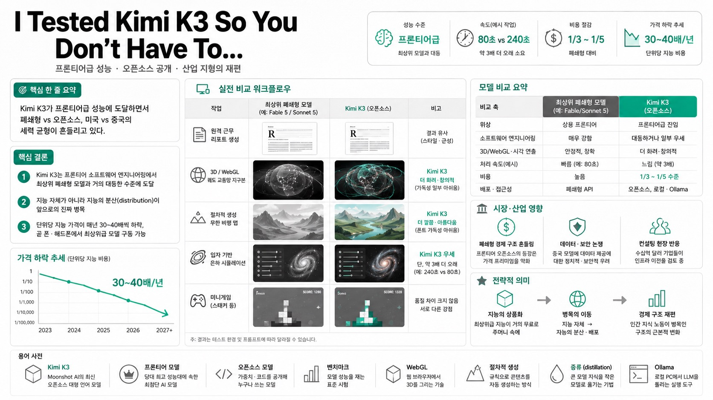

Nick SaraevMORNING DIGEST · 2026-07-17 · Nick Saraev🎬 영상
I Tested Kimi K3 So You Don't Have To...

01핵심 개요
항목
내용
채널
Nick Saraev
주제
중국 Moonshot AI의 오픈소스 모델 Kimi K3 실사용 테스트 및 산업 지형 변화 분석
한 줄 요약
Kimi K3가 프론티어급 성능에 도달하면서 폐쇄형 vs 오픈소스, 미국 vs 중국의 세력 균형이 흔들리고 있다는 실전 리뷰
핵심 결론 ①
Kimi K3는 프론티어 소프트웨어 엔지니어링에서 최상위 폐쇄형 모델과 거의 대등한 수준에 도달
핵심 결론 ②
발표자는 "지능 자체가 아니라 지능의 분산(distribution)이 앞으로의 진짜 병목"이라고 주장
핵심 결론 ③
단위당 지능 가격이 매년 30~40배씩 하락, 곧 폰·헤드폰에서 최상위급 모델 구동이 가능해질 전망
02핵심 내용 구조
발표자는 Kimi K3를 최상위 폐쇄형 모델(영상에서는 "Fable 5" / "Sonnet 5" 등으로 지칭)과 나란히 놓고 여러 작업을 직접 돌려 비교합니다.
모델 배경: 중국의 모델 개발사 Moonshot AI가 오랜 기간 Kimi 시리즈를 개발해 왔고, Ollama 같은 플랫폼에 오픈소스로 공개해 왔음. Kimi K3는 발표 불과 몇 시간 전 출시됨.
벤치마크 인상: 프론티어 소프트웨어 엔지니어링 능력이 최상위 모델(GPT 계열)을 압도한다고 평가. Terminal Bench 2.1 같은 터미널형 벤치마크에서 경쟁 모델보다 나은 성능을 보임(단, 자체 벤치마크는 편향 가능성 있음).
실전 비교 작업들:
- 원격 근무 관련 간단한 연구 논문/리포트 생성 → 두 모델 결과가 유사. 옛날 책처럼 첫 글자를 크게 쓰는 등 유사한 스타일(교차 오염·증류 의심). - 3D / WebGL 장면(궤도 교통망 지구본) → 여기서 차이가 확연히 드러남. Kimi 쪽이 더 화려하고 정보 고속도로 같은 초현실적 연출. - 절차적 생성(procedural) 무한 비행 맵 → Kimi 쪽 풍경이 더 깔끔하고 예쁘지만, 상단 글꼴 가독성 등 아쉬운 점도. - 입자 기반 은하/성운 시뮬레이션 → 슬라이더로 성간 먼지량·나선 팔 개수·회전 속도·혼돈 지표 조절. Kimi가 이겼으나 약 3배 더 오래 걸림. - 미니게임(스태커 등) → 품질 차이는 크지 않고 각 모델이 서로 다른 부분에서 조금씩 앞섬.
핵심 트레이드오프: 한쪽은 "Sonnet 5 수준", 다른 쪽은 "Fable 5 수준". 시간을 2배 들여 가격을 1/3~1/5로 낮출지, 아니면 240초 대신 80초에 끝내되 비용을 더 쓸지의 선택.
03기술적·시장 맥락
왜 중요한가: 오픈소스 프론티어 모델의 등장은 폐쇄형 벤더(발표자 지칭 Anthropic·OpenAI 등)의 경제적 계산을 근본적으로 흔든다. 최상위급 가격을 지불할 이유가 약해지기 때문.
컨설팅 현장 반응: 발표자에게 수십억 달러 규모 기업들이 "전체 인프라를 폐쇄형 벤더에서 Kimi K3로 옮겨야 하나"를 이미 묻고 있음. 다만 실제 이전은 결코 간단하지 않다고 언급.
데이터 우려: 미국 기업이 이른바 "무서운" 중국 모델에 대량 데이터를 넘기는 것에 대한 정치적·보안적 논쟁 존재.
가격 하락 추세: 발표자 추정으로 단위당 지능 비용이 매년 30~40배 하락. 몇 년 안에 헤드폰 정도의 기기에서도 최상위 모델 상당 작업을 처리할 것으로 전망.
04전략적 의미
지능의 상품화(commoditization): 최상위급 지능이 거의 무료로 누구나 주머니 속에서 이용 가능한 미래가 다가옴.
병목의 이동: "지능 자체"에서 "지능의 분산·배포"로 병목이 옮겨감. Kimi K3의 오픈소스 공개는 바로 이 분산 문제를 해결.
경제 구조 재편: 지금은 인간의 지식 노동이 거의 모든 것의 병목. 손가락 하나로 수백 개의 AI를 만들어 지적 작업을 처리하게 되면 경제의 희소성 구조 자체가 바뀜.
단극 vs 다극: 발표자는 모든 지능이 한곳에 집중되는 단극적 미래를 경계하며, 일정 수준의 경쟁이 필요하다고 봄.
05핵심 워크플로우/비교
비교 축
최상위 폐쇄형 모델(예: Fable/Sonnet 5)
Kimi K3(오픈소스)
위상
상용 프론티어
프론티어급에 진입
소프트웨어 엔지니어링
매우 강함
대등하거나 일부 우세
3D/WebGL·시각 연출
안정적, 정확
더 화려·창의적, 일부 가독성 아쉬움
처리 속도
빠름(예: 80초)
느림(유사 작업에서 약 3배)
비용
높음
1/3~1/5 수준으로 저렴
배포·접근성
폐쇄형 API
오픈소스, 로컬·Ollama 구동 지향
06활용 시나리오
비용 최적화 인프라 전환: 대량 요청을 처리하는 기업이 지연 시간을 다소 감수하는 대신 API 비용을 크게 절감하기 위해 폐쇄형에서 Kimi K3로 일부 워크로드를 이전.
로컬/온디바이스 배포: 오픈소스 특성을 활용해 사내 GPU나 향후 개인 기기에서 최상위급 모델을 직접 구동, 데이터 외부 유출 없이 운용.
창의적 3D/WebGL 프로토타이핑: 은하 시뮬레이터·궤도 교통망 등 시각적으로 화려한 데모나 아케이드형 미니게임을 빠르게 생성.
07현황 및 전망
Kimi K3는 출시 직후부터 프론티어급 성능으로 폐쇄형 벤더의 가격 프리미엄에 압력을 가하는 국면.
지능 가격은 계속 급락하고, 몇 년 내 소형 기기에서의 고성능 모델 구동이 현실화될 전망.